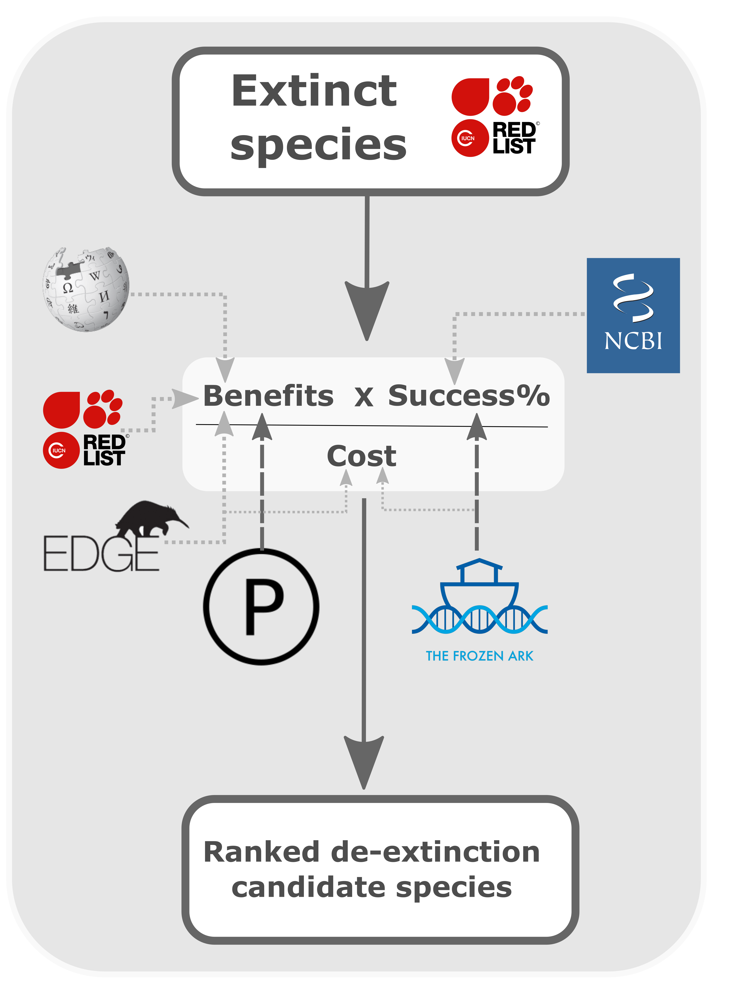

Current Oppertunities
Applications are invited from candidates for a full-time fixed term position as a post doctorate researcher with Zoology at the University of Galway.
We are seeking a post doctoral researcher to join our project: Jurassic Patents – Patent Law and the Value of Species in the Age of De-extinction. Drawing on a combination of legal, qualitative and quantitative methodologies, this project aims to examine whether patents could be the vector to attract funding for cryobanking and de extinction projects both in Europe and the United States.
The project also aims to investigate how society relates to recently extinct species and how this influences the de-extinction processes and ultimately which species are likely to be picked for de-extinction in the coming century. The interdisciplinary team, led by Dr. David Doyle (Maynooth University) and Dr. Kevin Healy (National University of Ireland, Galway), will develop knowledge about the legal and commercial implications of cryobanking and the de-extinction of non-human species in the twenty-first century.
PDF Example
Open a PDF file example.
Please see the following link for the full advertisment.
PDF Example
Open a PDF file example.
Please see the following link for the full advertisment.
Other oppertunites
Our group is open to those intrested in applying for PhD or Post Doctoral funding to work on research relating to the macroecology topics in our group. Current PhD funding includes the IRC Postgraduate awards (link)
We also support those who wish to apply for post doctroal research to work on macroecologcial funding including through funding through the IRC Postdoctoral funding §(link) and the Marie Curie research calls.